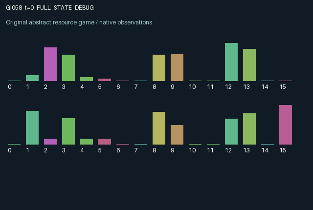

GI058 / LEGACY_ARRAY
astra-d2-00058: Complementary planting, maturation and common harvest
2 agents5 actions16 observation columns32 original horizonRuntime: PASS
Release verification episode
Untrained uniform legal actions. Actual JAX state sampled along the full original episode; full-state debug camera. No human performance or learning claim.

Run this game
crucibles play --game 58
Start Python locally, then open the address printed by the terminal. Installation, multiplayer, takeover and keyboard controls →
Objective, rewards & ending
Exact task contract
{
"objective": "Accumulate original per-agent rewards under the interaction rules in mechanism.md.",
"natural_termination": "No early terminal; original t >= 32 horizon.",
"exact_transition_and_reward_source": "def raw_step(self, key, state, actions):\n roles = jnp.arange(2, dtype=jnp.int32)\n location = jax.nn.one_hot(state[\"position\"], 8, dtype=jnp.float32)\n plant = ((actions == 3) & (state[\"energy\"] >= 0.5)).astype(jnp.float32)\n deposit = 0.7 * location * plant[:, None]\n enriched = jnp.clip(state[\"nutrient\"] + deposit, 0.0, 2.0)\n growth = 0.35 * jnp.minimum(enriched[0], enriched[1]) * state[\"soil\"]\n requests = location * (actions == 4).astype(jnp.float32)[:, None]\n total_requests = jnp.sum(requests, axis=0)\n removed = jnp.minimum(state[\"ripe\"], 0.8 * total_requests)\n share = removed / jnp.maximum(total_requests, 1.0)\n harvest = jnp.sum(requests * share[None, :], axis=1)\n taste = state[\"taste\"][roles, state[\"position\"]]\n first_stage = 0.55 * state[\"sprout\"][0] + growth\n second_stage = 0.6 * state[\"sprout\"][1] + 0.45 * state[\"sprout\"][0]\n movement = (actions == 2).astype(jnp.int32) - (actions == 1).astype(jnp.int32)\n next_state = {\n \"t\": state[\"t\"] + jnp.array(1, dtype=jnp.int32),\n \"position\": jnp.mod(state[\"position\"] + movement, 8).astype(jnp.int32),\n \"energy\": jnp.clip(state[\"energy\"] - 0.5 * plant + 0.04 + 0.2 * (actions == 0).astype(jnp.float32), 0.0, 3.0),\n \"nutrient\": jnp.clip(0.98 * (enriched - growth[None, :]), 0.0, 2.0),\n \"sprout\": jnp.clip(jnp.stack((first_stage, second_stage)), 0.0, 3.0),\n \"ripe\": jnp.clip(0.96 * (state[\"ripe\"] - removed + 0.4 * state[\"sprout\"][1]), 0.0, 3.0),\n \"soil\": jnp.clip(state[\"soil\"] + 0.035 - 0.15 * removed - 0.025 * jnp.sum(deposit, axis=0), 0.1, 1.0),\n \"taste\": state[\"taste\"],\n \"last_harvest\": harvest,\n }\n utility = 1.1 * taste * harvest - 0.025 * plant - 0.01 * jnp.abs(movement).astype(jnp.float32)\n rewards = jnp.tanh(utility).astype(jnp.float32)\n done_all = next_state[\"t\"] >= 32\n dones = jnp.full((2,), done_all, dtype=jnp.bool_)\n info = {\"done_all\": done_all, \"legal_mask\": self.legal_actions(next_state)}\n return self.observe(next_state), next_state, rewards, dones, info"
}Declared per-step reward bounds: -1.0 to 1.0. Observability: source_defined.
Rules
Original mechanism document (historical status wording retained)
# astra-d2-00058: Complementary planting, maturation and common harvest This is a parentless spatial resource proposal related to generic complementary public investment, common-pool harvesting and delayed biological growth. No benchmark or parent source was consulted. Whether it duplicates another mechanism, meets operational qualification or supports learning is unassessed. The world has eight beds arranged in a ring. Each agent supplies a different nutrient type. Actions are 0 rest, 1 move left, 2 move right, 3 plant one's nutrient in the current bed, and 4 harvest. All actions are legal; planting with less than 0.5 energy has no planting effect. Planting consumes energy; resting replenishes it faster than other actions. Motion changes position by one bed and has a small immediate cost. Growth depends on the minimum of the two nutrient stocks multiplied by soil fertility. Each unit of growth consumes both nutrient types. It enters the first maturation stage, subsequently flows into a second stage, and only then becomes ripe stock. Newly created growth cannot be harvested immediately. Nutrients and ripe biomass decay; harvesting and planting deplete soil, which recovers gradually. Small initial stocks of both nutrients make initial opportunities possible, but replenishing only one type eventually leaves the other as a limiting resource. Either agent may harvest crops regardless of who planted. If both harvest in the same bed, they split the amount removed equally; each can receive at most 0.8 units in that step. Harvesting uses ripe stock present before that step's maturation. Removing stock and degrading soil changes the other's later opportunities. Personal per-bed tastes are fixed private values drawn at reset, so the agents can value the same ripe crop differently. Observation is local except for both agent locations. An agent sees local nutrient quantities, combined immature biomass, ripe stock, soil and its own taste, plus adjacent ripe stock and soil. It cannot inspect the full field or the counterpart's private taste/energy. This permits movement, memory and timing to matter, without asserting that any learning method exploits them. Reward is tanh of 1.1 times personal taste times personal harvest, minus planting and movement costs; it is therefore bounded by [-1,1]. The incentives combine essential complementary contributions with opportunistic appropriation and soil recovery. Both agents alter persistent nutrients, position and crop availability, and can affect each other's eventual rewards. Observation columns are: elapsed time/32; own position/7; other's position/7; own energy/3; own nutrient at current bed/2; other nutrient there/2; total immature biomass there/6; ripe stock there/3; local soil; own local taste; ripe stock left/3; ripe stock right/3; soil left; soil right; own last harvest; role index. Reset uses only its supplied random key; transitions are deterministic conditional on state/actions and do not require further randomness. The post-step terminal state is retained at t=32. No compiler, validation or scientific result is claimed.
Commands
0Rest
1Move negative direction
2Move positive direction
3Plant
4Harvest
Roles & abilities
agent_0 Original legacy agent; see mechanism and source
agent_1 Original legacy agent; see mechanism and source
Observation permissions
Training receives only the original observation rows. Role cameras use declared visibility; debug cameras are explicitly marked. Local benchmark records log debug exposure and role takeover history.
Exact observation layout
[
{
"slice": [
0,
16
],
"visibility": "exact original observe() below",
"source_code": "def observe(self, state):\n roles = jnp.arange(2, dtype=jnp.int32)\n other = jnp.array([1, 0], dtype=jnp.int32)\n position = state[\"position\"]\n left = jnp.mod(position - 1, 8)\n right = jnp.mod(position + 1, 8)\n obs = jnp.zeros((2, 16), dtype=jnp.float32)\n obs = obs.at[:, 0].set(state[\"t\"].astype(jnp.float32) / 32.0)\n obs = obs.at[:, 1].set(position.astype(jnp.float32) / 7.0)\n obs = obs.at[:, 2].set(position[other].astype(jnp.float32) / 7.0)\n obs = obs.at[:, 3].set(state[\"energy\"] / 3.0)\n obs = obs.at[:, 4].set(state[\"nutrient\"][roles, position] / 2.0)\n obs = obs.at[:, 5].set(state[\"nutrient\"][other, position] / 2.0)\n obs = obs.at[:, 6].set(jnp.sum(state[\"sprout\"], axis=0)[position] / 6.0)\n obs = obs.at[:, 7].set(state[\"ripe\"][position] / 3.0)\n obs = obs.at[:, 8].set(state[\"soil\"][position])\n obs = obs.at[:, 9].set(state[\"taste\"][roles, position])\n obs = obs.at[:, 10].set(state[\"ripe\"][left] / 3.0)\n obs = obs.at[:, 11].set(state[\"ripe\"][right] / 3.0)\n obs = obs.at[:, 12].set(state[\"soil\"][left])\n obs = obs.at[:, 13].set(state[\"soil\"][right])\n obs = obs.at[:, 14].set(state[\"last_harvest\"])\n obs = obs.at[:, 15].set(roles.astype(jnp.float32))\n return obs"
}
]Entity visibility & attributes
[]
Actual verification & provenance
Per-game execution receipt
{
"game": "gi058",
"status": "PASS",
"verification_revision": 2,
"source_sha256": "c4a98ca52d3e09883a5407a57fc8f867d3601ecde1595f3ca6432bfeb026d924",
"seed": 20261101,
"runtime": {
"jax": "0.4.38",
"numpy": "1.26.4",
"devices": [
"TFRT_CPU_0"
]
},
"dimensions": {
"num_agents": 2,
"observation_size": 16,
"num_actions": 5,
"max_steps": 32
},
"checks": {
"eager_reset": {
"status": "PASS",
"seconds": 1.5631802082061768
},
"observation_spaces_legal_masks": {
"status": "PASS",
"seconds": 0.14716362953186035
},
"eager_step": {
"status": "PASS",
"seconds": 1.0786094665527344
},
"jit_reset": {
"status": "PASS",
"seconds": 0.627190351486206
},
"jit_step": {
"status": "PASS",
"seconds": 0.4165825843811035
},
"eager_jit_integer_parity_float_measurement": {
"status": "PASS",
"seconds": 0.0005438327789306641
},
"jit_vmap_reset": {
"status": "PASS",
"seconds": 0.957329511642456
},
"jit_vmap_step": {
"status": "PASS",
"seconds": 0.35469889640808105
},
"outer_autoreset_api": {
"status": "PASS",
"seconds": 1.0508437156677246
},
"full_original_horizon_episode_and_render": {
"status": "PASS",
"seconds": 2.3413639068603516
}
},
"human_scores": null,
"browser_controls": "PENDING",
"failures": [],
"elapsed_seconds": 9.483801126480103,
"float_parity_max_abs": 5.960464477539063e-08,
"numerical_parity": "UNDETERMINED_NONZERO_FLOAT_DIFFERENCE",
"raw_terminal_absorbing": "NOT_PART_OF_ORIGINAL_LEGACY_CONTRACT",
"terminal_outer_reset": "PASS",
"episode_steps": 32,
"scripted_random_returns": [
-0.09337939356919378,
-0.0248467624010118
],
"terminal": true,
"demo_information": "FULL_STATE_DEBUG",
"demo_frames": 33,
"render_roles_checked": 2
}Chromium control verification
{
"game": "gi058",
"status": "PASS",
"human_scores": null,
"engineering": true,
"checks": [
"catalog_selected_and_real_native_reset",
"dom_queue_and_native_step",
"second_participant_ownership_and_native_joint_step",
"all_roles_individually_controllable_no_role_cap",
"explicit_debug_camera",
"release_to_pure_ai_without_reset",
"close_session_preserves_log"
],
"ui_sha256": "96243f9de144b80b5e20a114330e2206bdcd58d3efc9c6f13bbc08b95cacc14d",
"keyboard": "NO_LEGAL_CARDINAL_COMMAND_FOR_ROLE0_AT_RESET",
"seconds": 4.1359734535217285
}Original identity and file hashes
{
"id": 58,
"key": "gi058",
"title": "astra-d2-00058: Complementary planting, maturation and common harvest",
"summary": "",
"tags": [],
"family": "legacy_array",
"dimensions": {
"num_agents": 2,
"observation_size": 16,
"num_actions": 5,
"max_steps": 32
},
"source_sha256": "c4a98ca52d3e09883a5407a57fc8f867d3601ecde1595f3ca6432bfeb026d924",
"manifest_sha256": "0cd013b2cf85124da754e497d3cf35efc641b0020dcede2e62730be5bafedc3b",
"files": [
{
"file": "candidate.py",
"sha256": "c4a98ca52d3e09883a5407a57fc8f867d3601ecde1595f3ca6432bfeb026d924",
"bytes": 4598,
"origin": "work/exp_2/astra_generation/discovery_v2/initial/candidate_00058/attempt_00/candidate.py"
},
{
"file": "mechanism.md",
"sha256": "cc33f3ec0a66ff2b512c423beaf3f07d33c05d86447c1ab91c736ba1b5812436",
"bytes": 3122,
"origin": "work/exp_2/astra_generation/discovery_v2/initial/candidate_00058/attempt_00/mechanism.md"
}
],
"original_status": "LEGACY_SOURCE",
"original_saved_replay": false,
"release_validation": "PASS",
"human_scores": null,
"browser_validation": "PASS"
}